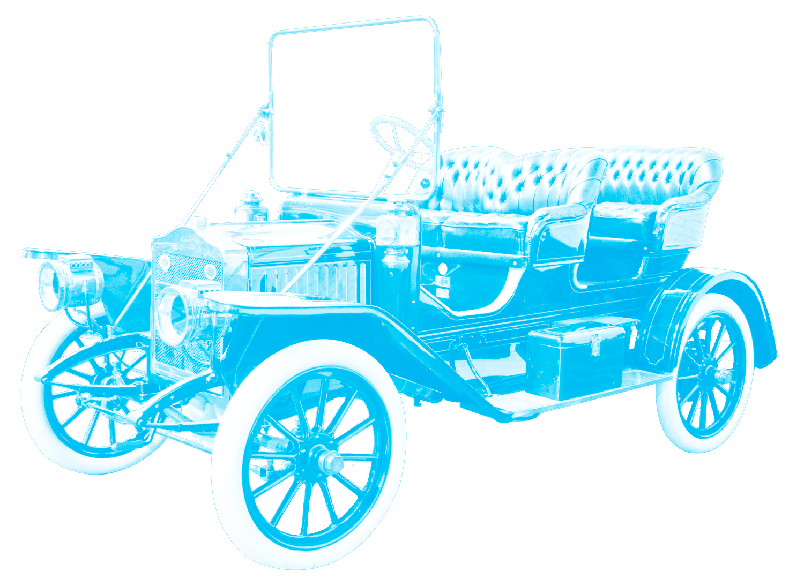

STEAM CARS EXPO
This screen is part of an exhibition titled Steam Cars Expo. The Exhibition features steam cars and their history, and the screen is integrated in the architecture of the space so that it covers from to the feet the entire wall. This exhibition’s mission is to educate the public about steam cars. It is about making steam cars more relatable, and accessible, and to the real life while giving access to a fun reading experience, a playful and interactive access to the public.
The Space
The categories of informations, are the history, including the inventors, ca modeling and interior, as well as an article from the time that the steam cars were really popular. The information is meant to be short, but dense without being to overwhelming, and the information will be placed strategically so that the lower on the screen will relate more to children, while the higher could be more complex. Also the fact that the container is draggable, and resizable, allows it to be displayed and accessible to all height, reading level.
People in the space.
Here goes captions
Here goes captions
The Reading Experience
The information would be scattered through out the screen through out but what is cool about the reading experience is that you can drag the box containing the information through the space enlarge or reduce the size it while it retains its proportions. In addition, it is coordinated with the timeline, so that the information changes or gets updated based on the users' temporal position, on the timeline. For instance, if the you move the box about the inventors across to the end of the timeline, it will show as you progression of all the inventors.
You can drag, enlarge, reduce
Here goes captions
Here goes captions
The Interactions
The main attraction of the screen will be the timeline. The main feature is sensors that generate avatar cars for the users when they stand at a certain distance to the screen. Those avatars are customizable when they invite the users to send pictures taken from their phone and the user will be seen drivng his own vehicle. The cars will also change depending on the position on the timeline. The timeline also allows other playful elements such as sending a message in the futures, by tapping on the screen and the car sprinting outside of the screen leaving an onomatopoeia of steam (vroom, vroom, vroom) and arrives in the other room as the old car in the future. It’s a playful allusion to the future.
Here goes captions
Here goes captions
The Interface
The interface is inspired by the Dada typographic movement. Dada was a futuristic movemnt who's attraction to speed, war and energy was closely related to the values that the steam car brought to the modern world. This value of speed is translated through their typogrphy and formal language. I wanted to bring my own interpretation to this expression playing with the ideas of layers and .
Drag Me!
Hover Me!
Hover Me!
Drag Me!
Designed by Ingrid Nelson. Inspired by,"The Steam Car is Coming Back" taken from Modern Mechanics and Inventions, Sept, 1932. For the Editorial for the Screen, course taught by Dylan Greif. RISD Spring 2016.